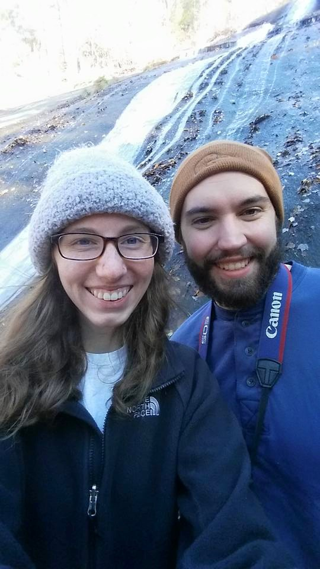

Hiking & Outdoor Life
I have always enjoyed the outdoors and spending time in nature. I was in the Boy Scouts and achieved the rank of Eagle Scout. During my time in the Boy Scouts I regularly went on camping trips to various state parks. I continue to visit state parks and go camping today.
I recently took a trip to Stone Mountain State Park in North Carolina with my girlfriend, Taylor. During our visit to the state park we visited the small settlement they have set up at the base of the mountain and learned about the family that lived there and the lifestyle that people lead living deep in the Blue Ridge Mountains.
Afterwards we hiked down to stone mountain water fall, a 200 foot waterfall. Being in late fall when we visited the park there were very few people at the falls. We climbed up the side of the water fall to get a better view and to take some photos
I have also been to Mount Rodgers, which I visited in the winter time as well, after a heavy snow. I was with my girlfriend and spent the day trying to hike to a waterfall that was out in the woods. We never found the waterfall but did find an abandoned home that looked to have been built in the early 1900s.
